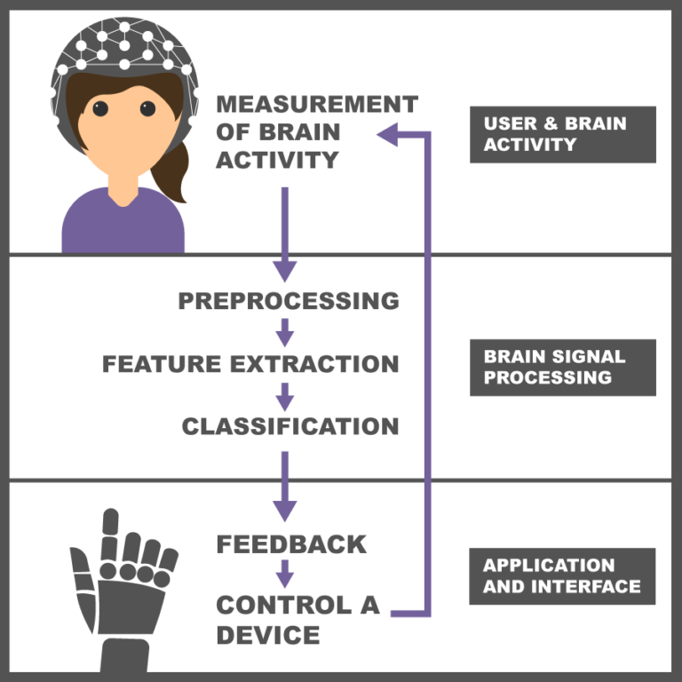

Brain-Controlled Robot
The whole architecture of an online BCI system is summarised in the diagram below:
The core components of a BCI system are as follows:
1. Measurement of brain activityThis part is responsible for recording brain activities using various types of sensors. After amplification and digitisation, the recorded brain signals serve as BCI inputs.
2. PreprocessingThis unit reduces noise and artifacts present in the brain signals in order to enhance the relevant information hidden in the input signals.
3. Feature extractionThe feature extractor transforms the preprocessed signals into feature values that correspond to the underlying neurological mechanism. These features are employed by BCI for controlling the output device.
4. ClassificationThis part is responsible for identifying the intention of the user from the extracted features.
5. Control a deviceThe output device can be a computer, a wheelchair or a robotic arm etc. The output of the classifier is used as a command to control the output device.
6. FeedbackThe BCI should feedback the consequences of the action to the user, in a closed loop, so that the user can make adjustments. Feedback can be in visual, auditory or tactile form.